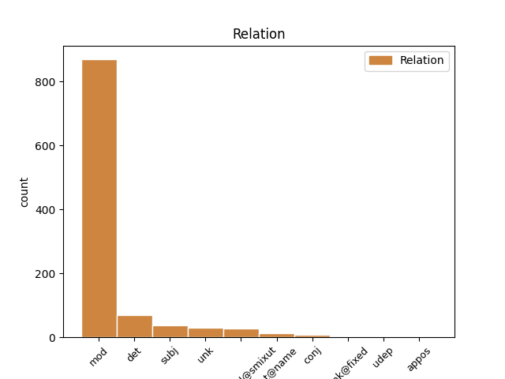
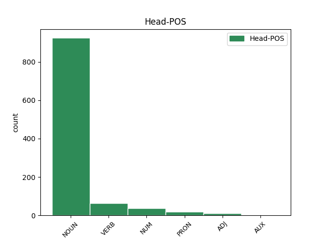
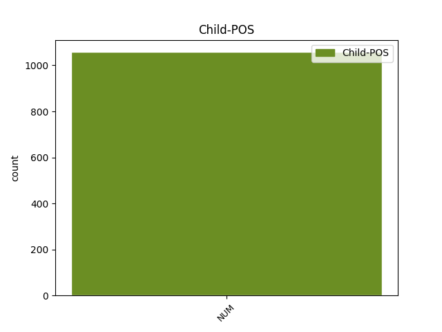

Distribution of features within this leaf



Agreement Rules sorted by frequency.
- When the dependent token is the modifer(mod) of the head token, and the dependent token is NUM.
1 6 _ _ _ _ 0 _ _ _
2 נקודות _ _ _ _ 0 _ _ _
3 רצופות _ _ _ _ 0 _ _ _
4 של _ _ _ _ 0 _ _ _
5 זלוטיקמן _ _ _ _ 0 _ _ _
6 בתוך _ _ _ _ 0 _ _ _
7 דקה _ _ _ _ 0 _ _ _
8 , _ _ _ _ 0 _ _ _
9 ב _ _ _ _ 0 _ _ _
10 תוספת _ _ _ _ 0 _ _ _
11 קליעות _ _ _ _ 0 _ _ _
12 מדוייקות _ _ _ _ 0 _ _ _
13 של _ _ _ _ 0 _ _ _
14 בנקס _ _ _ _ 0 _ _ _
15 ו _ _ _ _ 0 _ _ _
16 ספנסר _ _ _ _ 0 _ _ _
17 , _ _ _ _ 0 _ _ _
18 ו _ _ _ _ 0 _ _ _
19 הצגה _ _ _ _ 0 _ _ _
20 פרטית _ _ _ _ 0 _ _ _
21 של _ _ _ _ 0 _ _ _
22 ברקוביץ _ _ _ _ 0 _ _ _
23 ( _ _ _ _ 0 _ _ _
24 22 _ _ _ _ 0 _ _ _
25 נקודות _ _ _ _ 0 _ _ _
26 ב _ _ _ _ 0 _ _ _
27 ה_ _ _ _ _ 0 _ _ _
28 מחצית מחצית NOUN NOUN Gender=Fem|Number=Sing 0 _ _ _
29 ה _ _ _ _ 0 _ _ _
30 שניה שניה NUM NUM Gender=Fem|Number=Sing 28 mod _ _
31 ) _ _ _ _ 0 _ _ _
32 יצרו _ _ _ _ 0 _ _ _
33 את _ _ _ _ 0 _ _ _
34 ה _ _ _ _ 0 _ _ _
35 פער _ _ _ _ 0 _ _ _
36 ה _ _ _ _ 0 _ _ _
37 מבטיח _ _ _ _ 0 _ _ _
38 ש _ _ _ _ 0 _ _ _
39 צמח _ _ _ _ 0 _ _ _
40 עד _ _ _ _ 0 _ _ _
41 ל _ _ _ _ 0 _ _ _
42 ה_ _ _ _ _ 0 _ _ _
43 סיום _ _ _ _ 0 _ _ _
44 . _ _ _ _ 0 _ _ _
1 הם _ _ _ _ 0 _ _ _
2 היו _ _ _ _ 0 _ _ _
3 פצועים _ _ _ _ 0 _ _ _
4 כבר _ _ _ _ 0 _ _ _
5 ב _ _ _ _ 0 _ _ _
6 ה_ _ _ _ _ 0 _ _ _
7 שבוע _ _ _ _ 0 _ _ _
8 ש _ _ _ _ 0 _ _ _
9 עבר _ _ _ _ 0 _ _ _
10 , _ _ _ _ 0 _ _ _
11 אך _ _ _ _ 0 _ _ _
12 שיחקו _ _ _ _ 0 _ _ _
13 ב _ _ _ _ 0 _ _ _
14 סוף _ _ _ _ 0 _ _ _
15 ה _ _ _ _ 0 _ _ _
16 שבוע _ _ _ _ 0 _ _ _
17 ו _ _ _ _ 0 _ _ _
18 אף _ _ _ _ 0 _ _ _
19 אחד אחד NUM NUM Gender=Masc|Number=Sing 24 subj _ _
20 מ _ _ _ _ 0 _ _ _
21 ה _ _ _ _ 0 _ _ _
22 שלושה _ _ _ _ 0 _ _ _
23 לא _ _ _ _ 0 _ _ _
24 סיים סיים VERB VERB Gender=Masc|HebBinyan=PIEL|Number=Sing|Person=3|Tense=Past|Voice=Act 0 _ _ _
25 את _ _ _ _ 0 _ _ _
26 ה _ _ _ _ 0 _ _ _
27 משחק _ _ _ _ 0 _ _ _
28 " _ _ _ _ 0 _ _ _
29 , _ _ _ _ 0 _ _ _
30 אמר _ _ _ _ 0 _ _ _
31 גדעון _ _ _ _ 0 _ _ _
32 כהן _ _ _ _ 0 _ _ _
33 . _ _ _ _ 0 _ _ _
1 ל _ _ _ _ 0 _ _ _
2 טענת _ _ _ _ 0 _ _ _
3 רואי _ _ _ _ 0 _ _ _
4 חשבון _ _ _ _ 0 _ _ _
5 ו _ _ _ _ 0 _ _ _
6 חוקרים _ _ _ _ 0 _ _ _
7 על_ _ _ _ _ 0 _ _ _
8 _הם _ _ _ _ 0 _ _ _
9 מסתמך _ _ _ _ 0 _ _ _
10 ה _ _ _ _ 0 _ _ _
11 עיתון _ _ _ _ 0 _ _ _
12 , _ _ _ _ 0 _ _ _
13 הניבו _ _ _ _ 0 _ _ _
14 רבות _ _ _ _ 0 _ _ _
15 מ _ _ _ _ 0 _ _ _
16 ה _ _ _ _ 0 _ _ _
17 שותפויות _ _ _ _ 0 _ _ _
18 ה _ _ _ _ 0 _ _ _
19 סודיות _ _ _ _ 0 _ _ _
20 של _ _ _ _ 0 _ _ _
21 דרקסל _ _ _ _ 0 _ _ _
22 החזרים _ _ _ _ 0 _ _ _
23 בני בן NOUN NOUN Definite=Cons|Gender=Masc|Number=Plur 0 _ _ _
24 מאות מאות NUM NUM Gender=Fem|Number=Plur 23 compound@smixut _ _
25 ו _ _ _ _ 0 _ _ _
26 אף _ _ _ _ 0 _ _ _
27 אלפי _ _ _ _ 0 _ _ _
28 אחוזים _ _ _ _ 0 _ _ _
29 מ _ _ _ _ 0 _ _ _
30 ה _ _ _ _ 0 _ _ _
31 השקעה _ _ _ _ 0 _ _ _
32 ה _ _ _ _ 0 _ _ _
33 מקורית _ _ _ _ 0 _ _ _
34 . _ _ _ _ 0 _ _ _
1 ו _ _ _ _ 0 _ _ _
2 גם _ _ _ _ 0 _ _ _
3 מן _ _ _ _ 0 _ _ _
4 ה _ _ _ _ 0 _ _ _
5 עבר _ _ _ _ 0 _ _ _
6 ה _ _ _ _ 0 _ _ _
7 שני _ _ _ _ 0 _ _ _
8 קבוצת _ _ _ _ 0 _ _ _
9 מהגרים _ _ _ _ 0 _ _ _
10 ה _ _ _ _ 0 _ _ _
11 מופיעה _ _ _ _ 0 _ _ _
12 תחת _ _ _ _ 0 _ _ _
13 ה _ _ _ _ 0 _ _ _
14 שם שם NOUN NOUN Gender=Masc|Number=Sing 0 _ _ _
15 מכבי _ _ _ _ 0 _ _ _
16 ראשון ראשון NUM NUM Gender=Masc|Number=Sing 14 flat@name _ _
17 ל _ _ _ _ 0 _ _ _
18 ציון _ _ _ _ 0 _ _ _
19 . _ _ _ _ 0 _ _ _
1 ה _ _ _ _ 0 _ _ _
2 אוטובוס _ _ _ _ 0 _ _ _
3 ה _ _ _ _ 0 _ _ _
4 שני _ _ _ _ 0 _ _ _
5 בלם _ _ _ _ 0 _ _ _
6 בלימת _ _ _ _ 0 _ _ _
7 פתע _ _ _ _ 0 _ _ _
8 ו _ _ _ _ 0 _ _ _
9 כ _ _ _ _ 0 _ _ _
10 כל _ _ _ _ 0 _ _ _
11 ה _ _ _ _ 0 _ _ _
12 נראה _ _ _ _ 0 _ _ _
13 , _ _ _ _ 0 _ _ _
14 כ _ _ _ _ 0 _ _ _
15 תוצאה _ _ _ _ 0 _ _ _
16 מ _ _ _ _ 0 _ _ _
17 כך _ _ _ _ 0 _ _ _
18 , _ _ _ _ 0 _ _ _
19 תייר תייר NOUN NOUN Gender=Masc|Number=Sing 0 _ _ _
20 אחד אחד NUM NUM Definite=Cons|Gender=Masc|Number=Sing 19 unk _ _
21 נפצע _ _ _ _ 0 _ _ _
22 קל _ _ _ _ 0 _ _ _
23 . _ _ _ _ 0 _ _ _
1 בין _ _ _ _ 0 _ _ _
2 ינואר _ _ _ _ 0 _ _ _
3 ל _ _ _ _ 0 _ _ _
4 מארס _ _ _ _ 0 _ _ _
5 עדיין _ _ _ _ 0 _ _ _
6 ישרור _ _ _ _ 0 _ _ _
7 מזג _ _ _ _ 0 _ _ _
8 אוויר _ _ _ _ 0 _ _ _
9 לא _ _ _ _ 0 _ _ _
10 נוח _ _ _ _ 0 _ _ _
11 ל _ _ _ _ 0 _ _ _
12 לחימה _ _ _ _ 0 _ _ _
13 ו _ _ _ _ 0 _ _ _
14 ב _ _ _ _ 0 _ _ _
15 תחילת _ _ _ _ 0 _ _ _
16 מארס _ _ _ _ 0 _ _ _
17 יחל _ _ _ _ 0 _ _ _
18 חודש _ _ _ _ 0 _ _ _
19 ה _ _ _ _ 0 _ _ _
20 רמדאן _ _ _ _ 0 _ _ _
21 , _ _ _ _ 0 _ _ _
22 ש _ _ _ _ 0 _ _ _
23 לקראת _ _ _ _ 0 _ _ _
24 סיום_ _ _ _ _ 0 _ _ _
25 _של_ _ _ _ _ 0 _ _ _
26 _הוא _ _ _ _ 0 _ _ _
27 יימצאו _ _ _ _ 0 _ _ _
28 מאות _ _ _ _ 0 _ _ _
29 אלפים אלפים NUM NUM Gender=Masc|Number=Plur 0 _ _ _
30 ו _ _ _ _ 0 _ _ _
31 אולי _ _ _ _ 0 _ _ _
32 מיליונים מיליונים NUM NUM Gender=Masc|Number=Plur 29 conj _ _
33 של _ _ _ _ 0 _ _ _
34 מוסלמים _ _ _ _ 0 _ _ _
35 מ _ _ _ _ 0 _ _ _
36 רחבי _ _ _ _ 0 _ _ _
37 ה _ _ _ _ 0 _ _ _
38 עולם _ _ _ _ 0 _ _ _
39 על _ _ _ _ 0 _ _ _
40 אדמת _ _ _ _ 0 _ _ _
41 סעודיה _ _ _ _ 0 _ _ _
42 , _ _ _ _ 0 _ _ _
43 ל _ _ _ _ 0 _ _ _
44 צורך _ _ _ _ 0 _ _ _
45 ה _ _ _ _ 0 _ _ _
46 חאג _ _ _ _ 0 _ _ _
47 . _ _ _ _ 0 _ _ _
1 היא _ _ _ _ 0 _ _ _
2 ציוותה _ _ _ _ 0 _ _ _
3 להאריך _ _ _ _ 0 _ _ _
4 את _ _ _ _ 0 _ _ _
5 מעצר_ _ _ _ _ 0 _ _ _
6 _של_ _ _ _ _ 0 _ _ _
7 _הם _ _ _ _ 0 _ _ _
8 של _ _ _ _ 0 _ _ _
9 שניים שניים NUM NUM Gender=Masc|Number=Plur 12 det _ _
10 מן _ _ _ _ 0 _ _ _
11 ה _ _ _ _ 0 _ _ _
12 חשודים חשוד NOUN NOUN Gender=Masc|Number=Plur 0 _ _ _
13 ב _ _ _ _ 0 _ _ _
14 6 _ _ _ _ 0 _ _ _
15 ו _ _ _ _ 0 _ _ _
16 01 _ _ _ _ 0 _ _ _
17 ימים _ _ _ _ 0 _ _ _
18 ו _ _ _ _ 0 _ _ _
19 אילו _ _ _ _ 0 _ _ _
20 ה _ _ _ _ 0 _ _ _
21 חשוד _ _ _ _ 0 _ _ _
22 ה _ _ _ _ 0 _ _ _
23 שלישי _ _ _ _ 0 _ _ _
24 שוחרר _ _ _ _ 0 _ _ _
25 ב _ _ _ _ 0 _ _ _
26 ערבות _ _ _ _ 0 _ _ _
27 של _ _ _ _ 0 _ _ _
28 01 _ _ _ _ 0 _ _ _
29 אלפים _ _ _ _ 0 _ _ _
30 ש"ח _ _ _ _ 0 _ _ _
31 . _ _ _ _ 0 _ _ _
1 מי _ _ _ _ 0 _ _ _
2 ש _ _ _ _ 0 _ _ _
3 רוצים _ _ _ _ 0 _ _ _
4 לצייד _ _ _ _ 0 _ _ _
5 ב _ _ _ _ 0 _ _ _
6 בת בת NOUN NOUN Gender=Fem|Number=Sing 0 _ _ _
7 אחת אחת NUM NUM Gender=Fem|Number=Sing 6 unk@fixed _ _
8 את _ _ _ _ 0 _ _ _
9 כל _ _ _ _ 0 _ _ _
10 ה _ _ _ _ 0 _ _ _
11 משפחה _ _ _ _ 0 _ _ _
12 או _ _ _ _ 0 _ _ _
13 לפחות _ _ _ _ 0 _ _ _
14 כמה _ _ _ _ 0 _ _ _
15 מן_ _ _ _ _ 0 _ _ _
16 _הם _ _ _ _ 0 _ _ _
17 , _ _ _ _ 0 _ _ _
18 יכולים _ _ _ _ 0 _ _ _
19 לחסוך _ _ _ _ 0 _ _ _
20 ב _ _ _ _ 0 _ _ _
21 קנייה _ _ _ _ 0 _ _ _
22 שם _ _ _ _ 0 _ _ _
23 . _ _ _ _ 0 _ _ _
1 שרפה שרף NOUN NOUN Gender=Fem|Number=Sing 0 _ _ _
2 נוספת _ _ _ _ 0 _ _ _
3 , _ _ _ _ 0 _ _ _
4 רביעית רביעית NUM NUM Gender=Fem|Number=Sing 1 appos _ _
5 ב _ _ _ _ 0 _ _ _
6 שבוע _ _ _ _ 0 _ _ _
7 זה _ _ _ _ 0 _ _ _
8 , _ _ _ _ 0 _ _ _
9 פרצה _ _ _ _ 0 _ _ _
10 ב _ _ _ _ 0 _ _ _
11 יום _ _ _ _ 0 _ _ _
12 ששי _ _ _ _ 0 _ _ _
13 ב _ _ _ _ 0 _ _ _
14 מלון _ _ _ _ 0 _ _ _
15 ימית _ _ _ _ 0 _ _ _
16 ב _ _ _ _ 0 _ _ _
17 רחוב _ _ _ _ 0 _ _ _
18 ה _ _ _ _ 0 _ _ _
19 ירקון _ _ _ _ 0 _ _ _
20 ב _ _ _ _ 0 _ _ _
21 תל _ _ _ _ 0 _ _ _
22 - _ _ _ _ 0 _ _ _
23 אביב _ _ _ _ 0 _ _ _
24 . _ _ _ _ 0 _ _ _
Disagree Examples:
1 אדם _ _ _ _ 0 _ _ _
2 נהרג _ _ _ _ 0 _ _ _
3 , _ _ _ _ 0 _ _ _
4 אדם _ _ _ _ 0 _ _ _
5 נרצח _ _ _ _ 0 _ _ _
6 בידי _ _ _ _ 0 _ _ _
7 רעולי _ _ _ _ 0 _ _ _
8 פנים _ _ _ _ 0 _ _ _
9 ו _ _ _ _ 0 _ _ _
10 אחר _ _ _ _ 0 _ _ _
11 נדקר _ _ _ _ 0 _ _ _
12 על _ _ _ _ 0 _ _ _
13 יד_ _ _ _ _ 0 _ _ _
14 _של_ _ _ _ _ 0 _ _ _
15 _הם _ _ _ _ 0 _ _ _
16 , _ _ _ _ 0 _ _ _
17 803 _ _ _ _ 0 _ _ _
18 נפצעו _ _ _ _ 0 _ _ _
19 , _ _ _ _ 0 _ _ _
20 לפי _ _ _ _ 0 _ _ _
21 מקורות _ _ _ _ 0 _ _ _
22 פלשתיניים _ _ _ _ 0 _ _ _
23 , _ _ _ _ 0 _ _ _
24 ו _ _ _ _ 0 _ _ _
25 כן _ _ _ _ 0 _ _ _
26 נפצעו _ _ _ _ 0 _ _ _
27 שישה שישה NUM NUM Gender=Masc|Number=Sing 28 mod _ _
28 חיילי חייל NOUN NOUN Definite=Cons|Gender=Masc|Number=Plur 0 _ _ _
29 צה"ל _ _ _ _ 0 _ _ _
30 ו _ _ _ _ 0 _ _ _
31 תיירת _ _ _ _ 0 _ _ _
32 אחת _ _ _ _ 0 _ _ _
33 ב _ _ _ _ 0 _ _ _
34 אירועי _ _ _ _ 0 _ _ _
35 ה _ _ _ _ 0 _ _ _
36 שבוע _ _ _ _ 0 _ _ _
37 ב _ _ _ _ 0 _ _ _
38 ה_ _ _ _ _ 0 _ _ _
39 שטחים _ _ _ _ 0 _ _ _
40 . _ _ _ _ 0 _ _ _
1 חמישה חמישה NUM NUM Gender=Masc|Number=Sing 2 mod _ _
2 חיילי חייל NOUN NOUN Definite=Cons|Gender=Masc|Number=Plur 0 _ _ _
3 צה"ל _ _ _ _ 0 _ _ _
4 נפצעו _ _ _ _ 0 _ _ _
5 ב _ _ _ _ 0 _ _ _
6 אורח _ _ _ _ 0 _ _ _
7 קל _ _ _ _ 0 _ _ _
8 ב _ _ _ _ 0 _ _ _
9 תקריות _ _ _ _ 0 _ _ _
10 קשות _ _ _ _ 0 _ _ _
11 ש _ _ _ _ 0 _ _ _
12 היו _ _ _ _ 0 _ _ _
13 ב _ _ _ _ 0 _ _ _
14 סוף _ _ _ _ 0 _ _ _
15 ה _ _ _ _ 0 _ _ _
16 שבוע _ _ _ _ 0 _ _ _
17 ב _ _ _ _ 0 _ _ _
18 רצועת _ _ _ _ 0 _ _ _
19 עזה _ _ _ _ 0 _ _ _
20 . _ _ _ _ 0 _ _ _
1 ה _ _ _ _ 0 _ _ _
2 שאר _ _ _ _ 0 _ _ _
3 נפצעו _ _ _ _ 0 _ _ _
4 מ _ _ _ _ 0 _ _ _
5 גז _ _ _ _ 0 _ _ _
6 , _ _ _ _ 0 _ _ _
7 ב_ _ _ _ _ 0 _ _ _
8 _הם _ _ _ _ 0 _ _ _
9 ילדים _ _ _ _ 0 _ _ _
10 רבים _ _ _ _ 0 _ _ _
11 ב _ _ _ _ 0 _ _ _
12 גיל _ _ _ _ 0 _ _ _
13 01 _ _ _ _ 0 _ _ _
14 ו _ _ _ _ 0 _ _ _
15 21 _ _ _ _ 0 _ _ _
16 ו _ _ _ _ 0 _ _ _
17 ארבע ארבע NUM NUM Gender=Fem|Number=Sing 18 mod _ _
18 נשים איש NOUN NOUN Gender=Fem|Number=Plur 0 _ _ _
19 ב _ _ _ _ 0 _ _ _
20 הריון _ _ _ _ 0 _ _ _
21 . _ _ _ _ 0 _ _ _
1 מקורות _ _ _ _ 0 _ _ _
2 פלשתיניים _ _ _ _ 0 _ _ _
3 דיווחו _ _ _ _ 0 _ _ _
4 כי _ _ _ _ 0 _ _ _
5 עיקר _ _ _ _ 0 _ _ _
6 ה _ _ _ _ 0 _ _ _
7 מהומות _ _ _ _ 0 _ _ _
8 היו _ _ _ _ 0 _ _ _
9 אתמול _ _ _ _ 0 _ _ _
10 ב _ _ _ _ 0 _ _ _
11 אזור _ _ _ _ 0 _ _ _
12 בית _ _ _ _ 0 _ _ _
13 חנון _ _ _ _ 0 _ _ _
14 , _ _ _ _ 0 _ _ _
15 ש _ _ _ _ 0 _ _ _
16 שם _ _ _ _ 0 _ _ _
17 נפצעו _ _ _ _ 0 _ _ _
18 34 _ _ _ _ 0 _ _ _
19 תושבים _ _ _ _ 0 _ _ _
20 , _ _ _ _ 0 _ _ _
21 מן_ _ _ _ _ 0 _ _ _
22 _הם הוא PRON PRON Gender=Masc|Number=Plur|Person=3|PronType=Prs 0 _ _ _
23 חמישה חמישה NUM NUM Gender=Masc|HebSource=ConvUncertainHead|Number=Sing 22 unk _ _
24 קשה _ _ _ _ 0 _ _ _
25 . _ _ _ _ 0 _ _ _
1 אתמול _ _ _ _ 0 _ _ _
2 הושלכו _ _ _ _ 0 _ _ _
3 ששה ששה NUM NUM Gender=Masc|Number=Sing 4 mod _ _
4 בקבוקי בקבוק NOUN NOUN Definite=Cons|Gender=Masc|Number=Plur 0 _ _ _
5 תבערה _ _ _ _ 0 _ _ _
6 על _ _ _ _ 0 _ _ _
7 סיורים _ _ _ _ 0 _ _ _
8 של _ _ _ _ 0 _ _ _
9 צה"ל _ _ _ _ 0 _ _ _
10 ב _ _ _ _ 0 _ _ _
11 רפיח _ _ _ _ 0 _ _ _
12 . _ _ _ _ 0 _ _ _